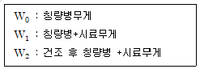

식품가공기능사 (2014-04-06 기출문제)
1과목: 식품화학
1. 캐러멜화와 관계가 가장 깊은 것은?
- 당류
- 단백질
- 지방
- 비타민
(정답률: 98%)

2. 다음 식품 중 졸(sol) 형태인 것은?
- 우유
- 두부
- 삶은 달걀
- 묵
(정답률: 84%)
3. 탄수화물의 성질을 설명한 것으로 옳은 것은?
- 지방과 함께 가열하면 갈변화를 일으킨다.
- 폴리페놀라아제와 티로시나아제에 의하여 가수분해 된다.
- 탄소, 수소, 산소, 질소 등으로 구성되어져 있다.
- 수화되어 가열된 다음 팽윤과정을 거쳐 겔(gel)화가 된다.
(정답률: 73%)
4. 찹쌀전분의 요오드 반응 색깔은?
- 청색
- 황색
- 적자색
- 무색
(정답률: 86%)
5. 건성유의 요오드가는?
- 70 이하
- 70 ~ 100
- 100 ~ 130
- 130 이상
(정답률: 77%)
6. 탄수화물, 단백질, 지방의 3가지 영양소에 관한 소화효소가 모두 들어 있는 것은?
- 담즙
- 타액
- 췌액
- 위액
(정답률: 83%)
7. 조지방 정량에 사용되는 유기용매와 실험 기구는?
- 수산화나트륨, 가스크로마토그래피
- 황산칼륨, 질소분해장치
- 에테르, 속슬렛추출기
- 메틸알코올, 질소증류장치
(정답률: 86%)
8. 아래의 자료에 의한 시료의 습식수분함량 계산 공식은?

- 수분(%) = (W1-W2) / (W1-W0) X100
- 수분(%) = (W2-W1) / (W1-W0) X100
- 수분(%) = (W1-W0) / (W1-W2) X100
- 수분(%) = (W1-W2) / (W2-W0) X100
(정답률: 82%)
9. 분석용 시료의 조제에 관한 설명 중 가장 적절한 것은?
- 쌀, 보리처럼 수분이 비교적 적은 것은 불순물을 제거 분쇄하여 30메시 체에 쳐서 통과된 것을 사용한다.
- 채소, 과일류는 믹서로 갈아서 펄프상태로 만들어 실온에 보관한다.
- 버터, 마가린 등의 유지류는 잘게 썰어서 1⑤℃로 건조시켜 분쇄한다.
- 우유는 크림을 분리시켜 아래층의 것만을 시료로 사용한다.
(정답률: 69%)
10. 유지의 자동산화 원인과 관계가 없는 것은?
- 지방산의 종류
- 온도
- 금속
- 지방산의 길이
(정답률: 77%)
11. 식품의 텍스처 특성은 크게 3가지로 분류하는데 이에 해당되지 않는 것은?
- 식품의 강도와 유동성에 관한 기계적 특성
- 식품의 색에 관한 색도적 특성
- 수분과 지방함량에 따른 촉감적 특성
- 식품을 구성하는 입자형태에 따른 기하학적 특성
(정답률: 66%)
12. 다음 중 Ca의 흡수를 돕는 Vitamin은 어느 것인가?
- Vitamin A
- Vitamin B
- Vitamin C
- Vitamin D
(정답률: 76%)
13. 다음과 같이 구성된 식품에서 가장 많이 식품의 변질을 유발하여 제품의 품질수명기간을 단축시키는 효소는 무엇인가? (밀가루 25%, 설탕 4%, 당면 45%, 대두유 12%, 생크림 10%, 비타민 C 1%, 계면활성제 1%, 수분 2%)
- Protease
- Lipoxygenase
- Polyp henol oxidase
- Ascorbate oxidase
(정답률: 64%)
14. 단백질을 구성하고 있는 원소 중 질소의 평균함량은?
- 55%
- 25%
- 16%
- 7%
(정답률: 73%)
15. 된장국물 등과 같이 분산상이 고체이고 분산매가 액체 콜로이드 상태를 무엇이라 하는가?
- 진용액
- 유화액
- 졸(sol)
- 젤(gel)
(정답률: 86%)
16. 다음 비타민 중 가열조리 시에 가장 불안정한 비타민은?
- 비타민 C
- 비타민 A
- 비타민 D
- 비타민 E
(정답률: 82%)
17. 무기질의 기능으로 가장 거리가 먼 것은?
- 체액의 pH 및 삼투압 조절
- 근육이나 신경의 흥분
- 단백질의 용해성 증대
- 비타민의 절약
(정답률: 76%)
18. 설탕의 구성성분이며 꿀벌에 많이 존재하는 당은?
- 과당(fructose)
- 맥아당(maltose)
- 유당(lactose)
- 만노오스(mannose)
(정답률: 85%)
19. 다음 중 단백질의 변성을 설명한 것으로 옳지 않은 것은?
- 물리적 원인인 가열, 동결, 고압 등과 효소, 산, 알칼리 등의 화학적 원인에 의해 일어난다.
- 펩티드 결합의 가수분해로 성질이 현저하게 변화한다.
- 대부분 용해도가 감소하여 응고현상이 나타난다.
- 단백질의 생물학적 특성인 면역성, 독성, 효소작용 등의 활성이 감소된다.
(정답률: 46%)
20. 다음 중 세균성 식중독과 거리가 먼 것은?
- 솔라닌에 의한 중독
- 살모넬라에 의한 중독
- 프로테우스에 의한 중독
- 보툴리누스에 의한 중독
(정답률: 78%)
2과목: 식품위생학
21. 식품 중의 수분정량법인 상압가열건조법에 대한 설명으로 틀린 것은?
- 무게분석 방법이다.
- 시료를 함량이 될 때까지 충분히 건조시켜야 한다.
- 시료 중 수분의 무게는 건조 후의 무게에서 건조 전의 무게를 뺀 값이다.
- 시료 중 수분정량 결과는 퍼센트(%)값으로 산출한다.
(정답률: 73%)
22. 황색포도상구균 식중독의 원인 물질은?
- 테트로도톡신
- 엔테로톡신
- 프토마인
- 에르고톡신
(정답률: 76%)
23. 구충이라고도 하며 피낭자충으로 오염된 식품을 섭취하거나, 피낭자충이 피부를 뚫고 들어감으로써 감염되는 기생충은?
- 십이지장충
- 회충
- 요충
- 편충
(정답률: 73%)
24. 다음 중 육류 발색제가 아닌 것은?
- 아질산나트륨
- 젖산나트륨
- 질산칼륨
- 질산나트륨
(정답률: 73%)
25. 식품위생검사와 가장 관계가 깊은 균은?
- 젖산균
- 대장균
- 초산균
- 프로피온산균
(정답률: 87%)
26. 병원성 장염비브리오균의 최적 증식온도는?
- -5 ~ 5℃
- 5 ~ 15℃
- 30 ~ 37℃
- 60 ~ 70℃
(정답률: 76%)
27. 대장균군 검사 시 MPN이 250이라면 검체 1리터 중에는 얼마의 대장균군이 있는가?
- 25
- 250
- 2,500
- 25,000
(정답률: 80%)
28. 병원체가 바이러스인 질병으로만 묶인 것은?
- 콜레라, 장티푸스
- 세균성 이질, 파라티푸스
- 폴리오, 유행성 간염
- 성홍열, 디프테리아
(정답률: 70%)
29. 소독약의 세균력을 평가할 때 기준이 되는 것은?
- 에탄올
- 과산화수소
- 차아염소산나트륨
- 석탄산
(정답률: 64%)
30. 방사능 물질 오염에 따른 위험에 대한 설명으로 틀린 것은?
- 반감기가 길수록 위험하다.
- 감수성이 클수록 위험하다.
- 조직에 침착하는 정도가 작을수록 위험하다.
- 방사선의 종류에 따라 위험도의 차이가 있다.
(정답률: 66%)
31. 기생충과 중간숙주의 연결이 틀린 것은?
- 광절열두촌층 - 양
- 간디스토마 - 잉어
- 유구조충 - 돼지
- 무구조충 - 소
(정답률: 75%)
32. 화학적 합성첨가물에 있어서 사용량이 되는 기준으로 가장 적합한 것은?
- 안전성에서 본 허용최대량
- 효과면에서 본 허용최대량
- 경제성에서 본 허용최대량
- 사용면에서 본 허용최대량
(정답률: 81%)
33. 청매 중에 함유된 독소 성분은?
- 아미그달린(amygdalin)
- 고시풀(gossypol)
- 무스카린(muscarine)
- 솔라닌(solanine)
(정답률: 77%)
34. 식품의 생균수 측정 시 평판의 배양 온도와 시간은?
- 약 45℃, 12시간
- 약 40℃, 24시간
- 약 35℃, 48시간
- 약 25℃, 36시간
(정답률: 75%)
35. 식품의 Brix를 측정할 때 사용되는 기기는?
- 분광광도계
- 굴절당도계
- PH 측정기
- 회전점도계
(정답률: 74%)
36. 다음 중 경구감염병에 관한 설명으로 틀린 것은?
- 경구감염병은 병원체와 고유숙주 사이에 감염환이 성립되어 있다.
- 경구감염병은 미량의 균량으로도 발병한다.
- 경구감염병은 잠복기가 길다.
- 경구감염병은 2차 감염이 발생하지 않는다.
(정답률: 75%)
37. 동물성 식품의 부패는 주로 무엇이 변질된 것인가?
- 지방
- 당질
- 비타민
- 단백질
(정답률: 78%)
38. 유기수은을 함유한 어패류에 의하여 발생되는 질병은?
- 이타이이타이병
- 미나마타병
- PCB중독
- 주석중독
(정답률: 72%)
39. 고체시료를 균질화시키기 위해서 사용하는 기구가 아닌 것은?
- 백금이
- 블랜더
- 막자사발
- 스토마커
(정답률: 68%)
40. 세균에의한 경구감염병은?
- 유해성 간염
- 폴리오
- 전염성 설사
- 콜레라
(정답률: 58%)
3과목: 식품가공 및 기계
41. 임펠러(impeller)의 중심부로 유체를 흡인함으로서 운동에너지를 압력에너지로 변화시켜 수송하는 펌프는?
- 원심 펌프
- 플런저 펌프
- 회전 펌프
- 제트 펌프
(정답률: 63%)
42. 청국장 제조와 가장 관계가 깊은 균은?
- 황국균
- 납두균
- 누룩곰팡이
- 유산균
(정답률: 64%)
43. D121 2.0min인 미생물의 Z값이 10℃일 경우 D111의 값은 얼마인가?
- 15 min
- 20 min
- 25 min
- 30 min
(정답률: 65%)
44. 식품제조 기계를 제작할 때 많이 쓰이는 합금강은?
- 18-8 스테인리스강
- 20- 8 스테인리스강
- 22 - 8 스테인리스강
- 24 - 8 스테인리스강
(정답률: 69%)
45. 통조림 제조 시 탈기가 불충분할 때 관이 약간 팽창하는 것을 무엇이라 하는가?
- 플리퍼
- 수소팽창
- 스프링거
- 리이킹
(정답률: 58%)
46. 신선한 우유의 pH는?
- 6.0 ~ 6.3
- 6.5 ~ 6.7
- 7.0 ~ 7.2
- 7.3 ~ 7.5
(정답률: 73%)
47. 질소가스 충전 포장기계의 설명으로 틀린 것은?
- 포장 내부에 있는 공기를 질소로 치환시켜 포장하는 기계이다.
- 진공 포장이므로 완전히 산소가 배제되어 산화 방지가 완전하다.
- 포장할 때 수축으로 인해 내용품 변형, 재료 파손 등이 유발될 수 있다.
- 분유 등도 이 기계로 포장하며 노즐식과 체임버식을 쓰고 있다.
(정답률: 41%)
48. 콩의 트립신 저해제에 대한 설명 중 틀린 것은?
- 콩은 트립신 저해제를 함유하고 있다.
- 트립신 저해제는 단백질의 소화흡수를 방해한다.
- 트립신 저해제는 가열하면 불활성화 된다.
- 콩을 발아시켜도 트립신 저해제는 감소되지 않는다.
(정답률: 64%)
49. 레닌에 의해 가수분해되어 불용화되는 카제인 미셀(micelle)의 구성성분은?
- β-카제인
- α31-카제인
- κ-카제인
- α32-카제인
(정답률: 64%)
50. 회전하는 축의 선단에 원반이 설치되어 있고, 원료액이 이 원반에 공급되어 원반의 가속도에 의해 분무되는 건조방법은?
- 원심식
- 압력식
- 드럼식
- Cooling System
(정답률: 69%)
51. 제면 과정 중에 소금을 넣는 이유로 거리가 먼 것은?
- 반죽이 탄력성을 향상시키기 위해
- 면의 균열을 막기 위해
- 제품의 색깔을 희게 하기 위해
- 보존성을 향상시키기 위해
(정답률: 72%)
52. 이중 밀봉기의 3요소와 거리가 먼 것은?
- 척(chuck)
- 스핀들(spindle)
- 리프터(lifter)
- 시밍 롤(seaming roll)
(정답률: 56%)
53. 베이컨은 주로 돼지의 어느 부위로 만든 것인가?
- 뒷다리 부위
- 앞다리 부위
- 등심 부위
- 배 부위
(정답률: 75%)
54. 보리 코지 제조 시 곰팡이가 번식하는 동안 분비되는 효소는?
- 락타이제
- 펙티나아제
- 아밀라아제
- 미로시나아제
(정답률: 60%)
55. 채취한식용유지에 함유된 지용성 색소를 제거하는 등의 여과, 탈색, 탈취, 정제를 위한 여과보조제가 아닌 것은?
- 규조토
- 키토산
- 산성 백토
- 벤토나이트
(정답률: 68%)
56. 크림을 용기에 넣고 교반하면서 크림 중의 지방구가 알갱이 상태로 되게 하는 기계명은?
- 교동기
- 충전기
- 크림 분리기
- 지방 측정기
(정답률: 67%)
57. 다음 수송기계 중 수직 이동형인 것은?
- 스크루우 컨베이어
- 체인 컨베이어
- 공기 컨베이어
- 벨트 컨베이어
(정답률: 54%)
58. 식품냉동 시 글레이즈(glaze)의 사용 목적이 아닌 것은?
- 동결 식품의 보호 작용
- 수분의 증발방지
- 식품의 영양 강화 작용
- 시방, 색소 등의 산화방지
(정답률: 63%)
59. 혼탁사과주스 제조와 관계가 없는 공정은?
- 살균
- 증류
- 여과
- 파쇄
(정답률: 68%)
60. 소시지 제조와 관계가 없는 것은?
- 초퍼(chopper)
- 케이싱(casing)
- 충진기(stuffer)
- 균질기(homogenizer)
(정답률: 56%)